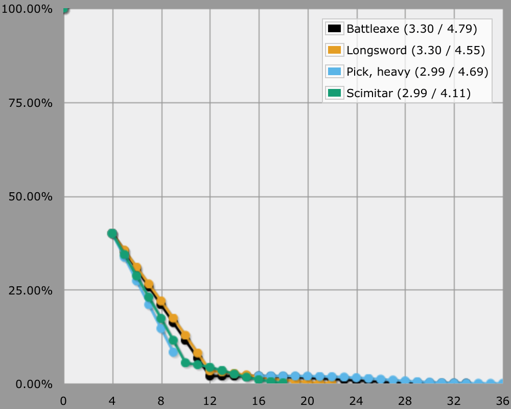
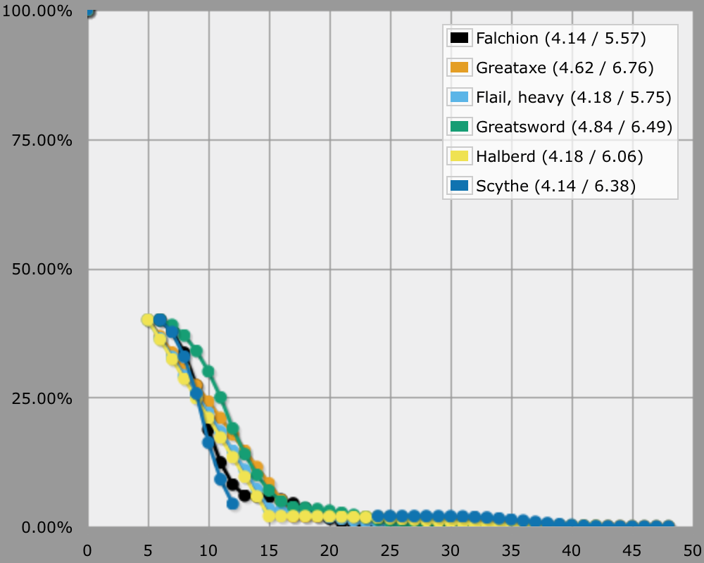
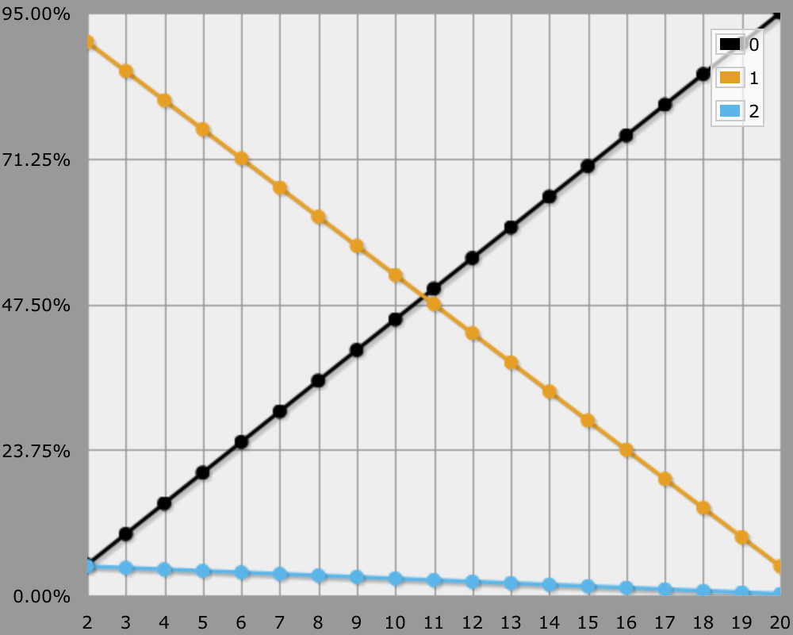
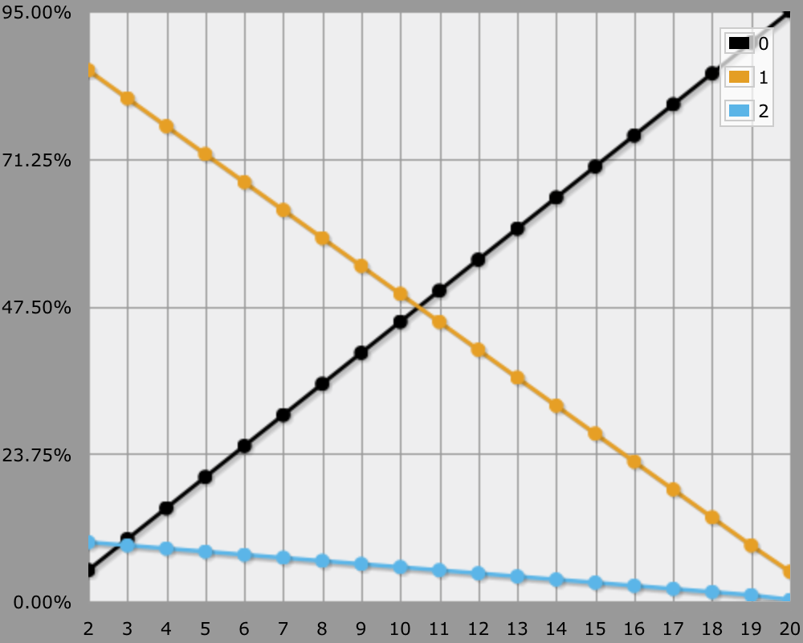
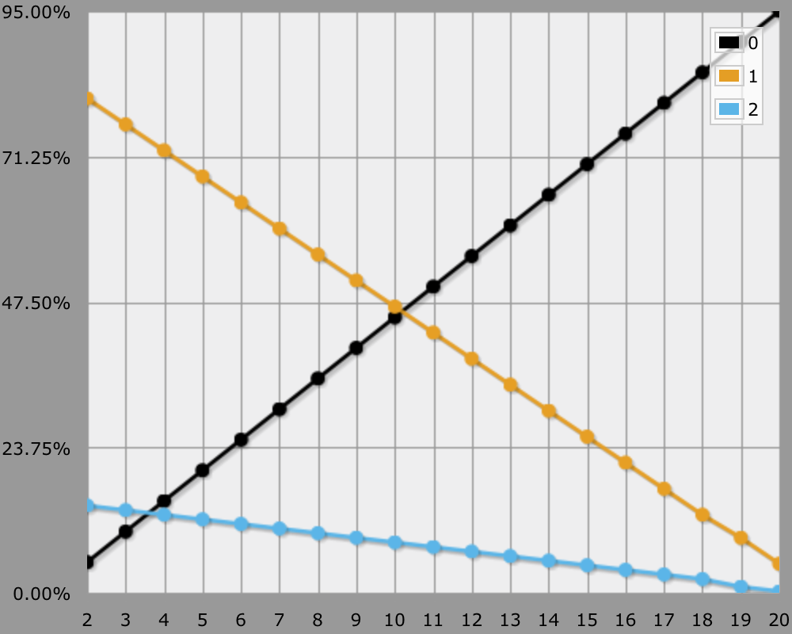
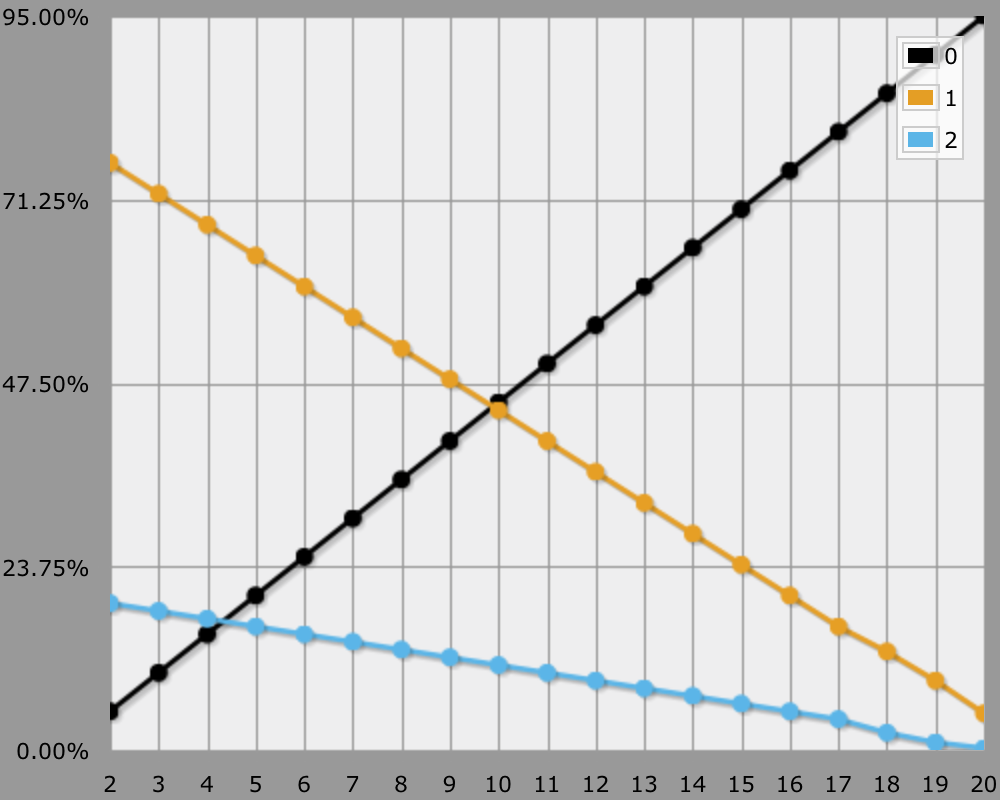
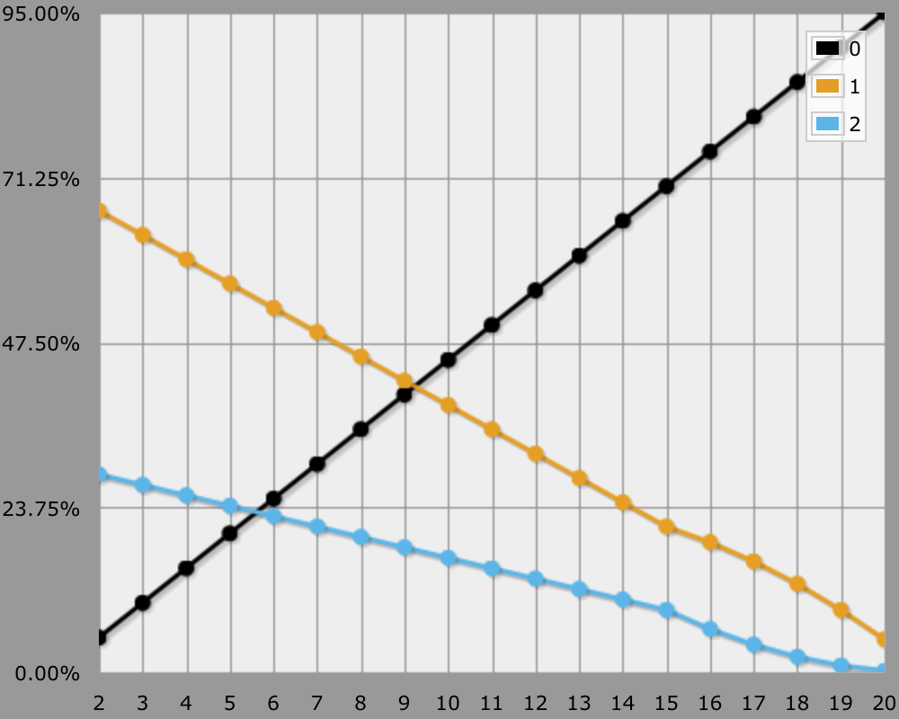
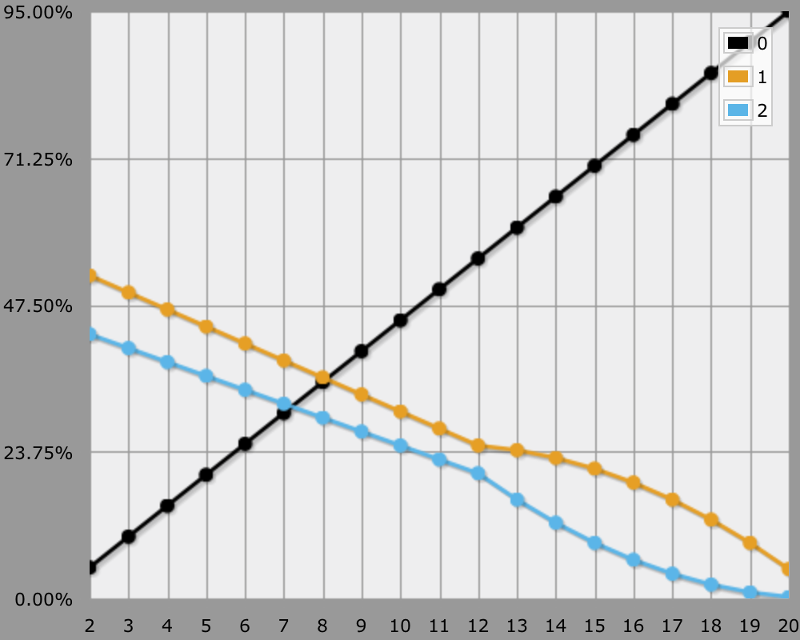
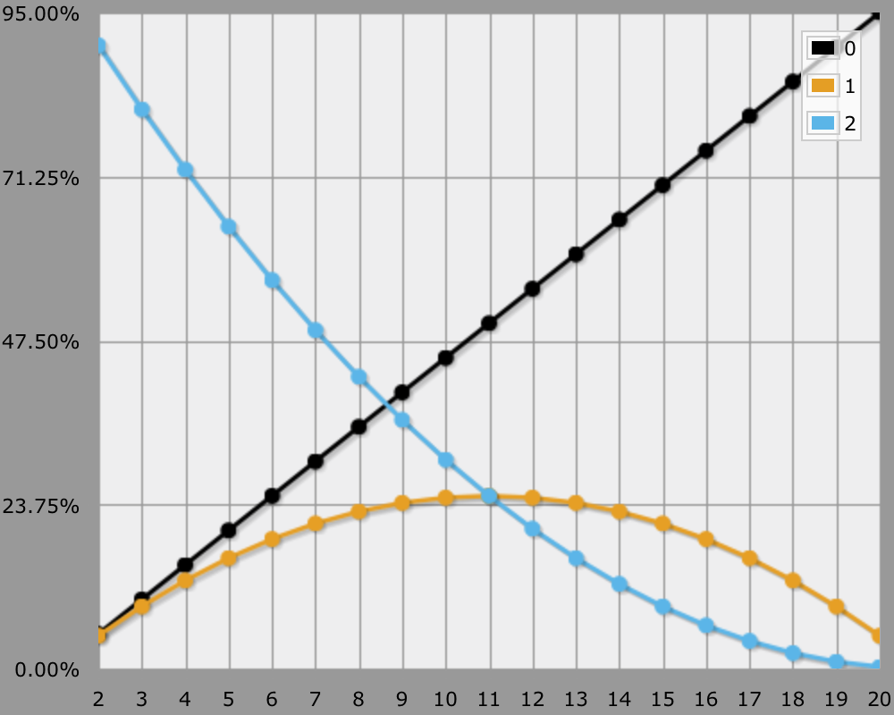
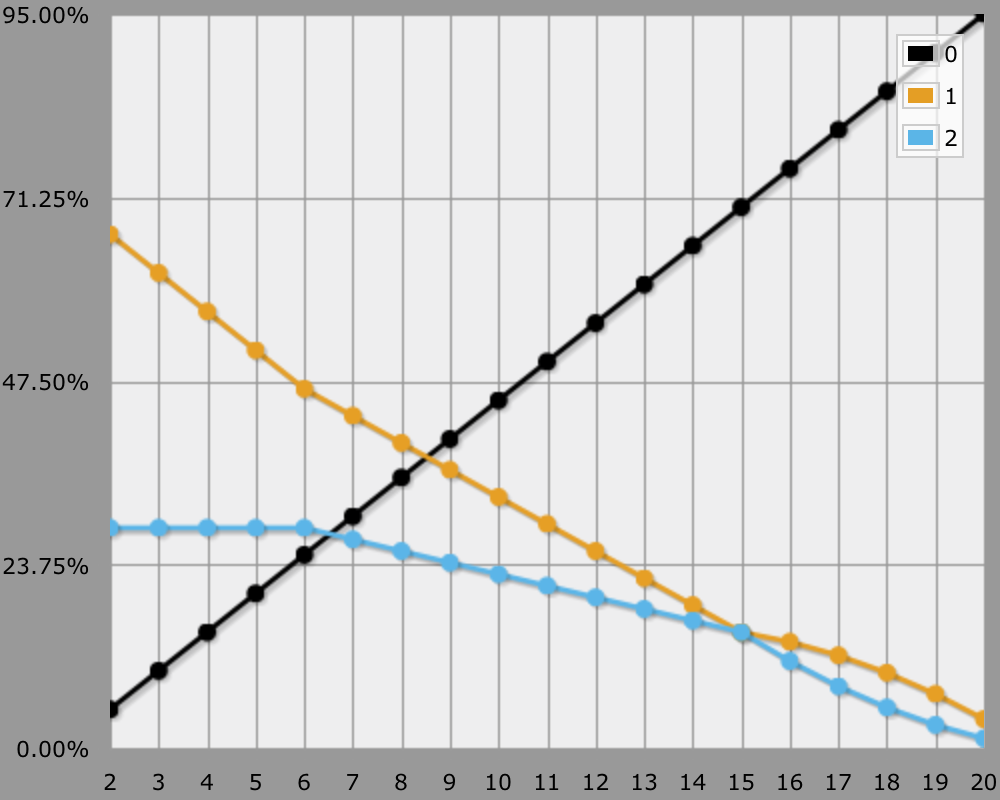

D&D 3 Attacks
Critical Hits
I've written an article about D&D fourth edition attacks. Here's one about Dungeons and Dragons third edition attacks.
The main difference between these two editions of D&D is how critical hits work. In the fourth edition a critical hit occurs when rolling a natural 20, simply resulting in maximized weapon damage, with extra dice rolled for high crit weapons. In the third edition each weapon has its own threat number, and a critical hit results in multiple damage rolls, which include all static bonuses. So a ×2 critical hit with a 2d6 + 7 attack would become 4d6 + 14.
Let's take a generic level 1 Fighter with a Strength of 16 and see how various weapons perform against an AC range from 14 to 20. Here's an AnyDice program that does it.
function: ROLL:n vs AC:n {
if ROLL >= THREAT & ROLL + ATTACK >= AC {
result: [threat d20]
}
if ROLL + ATTACK >= AC | ROLL = 20 { result: DAMAGE }
result: 0
}
function: threat ROLL:n {
if ROLL + ATTACK >= AC | ROLL = 20 {
result: CRITICAL d DAMAGE
}
result: DAMAGE
}
AC: d{14..20}
STRENGTH: 3
ATTACK: 1 + STRENGTH
DAMAGE: 1d8 + STRENGTH
THREAT: 20
CRITICAL: 3
output [d20 vs AC] named "Battleaxe"
DAMAGE: 1d8 + STRENGTH
THREAT: 19
CRITICAL: 2
output [d20 vs AC] named "Longsword"
DAMAGE: 1d6 + STRENGTH
THREAT: 20
CRITICAL: 4
output [d20 vs AC] named "Pick, heavy"
DAMAGE: 1d6 + STRENGTH
THREAT: 18
CRITICAL: 2
output [d20 vs AC] named "Scimitar"
DAMAGE: 2d4 + STRENGTH * 3/2
THREAT: 18
CRITICAL: 2
output [d20 vs AC] named "Falchion"
DAMAGE: 1d12 + STRENGTH * 3/2
THREAT: 20
CRITICAL: 3
output [d20 vs AC] named "Greataxe"
DAMAGE: 1d10 + STRENGTH * 3/2
THREAT: 19
CRITICAL: 2
output [d20 vs AC] named "Flail, heavy"
DAMAGE: 2d6 + STRENGTH * 3/2
THREAT: 19
CRITICAL: 2
output [d20 vs AC] named "Greatsword"
DAMAGE: 1d10 + STRENGTH * 3/2
THREAT: 20
CRITICAL: 3
output [d20 vs AC] named "Halberd"
DAMAGE: 2d4 + STRENGTH * 3/2
THREAT: 20
CRITICAL: 4
output [d20 vs AC] named "Scythe"
And here are the results, split up in one-handed and two-handed weapons for convenience. I use the at-least display because I think it's most meaningful.


So if you simply want to dish out damage, pick a sword and you can't go wrong.
Another Look At Critical Hits
If you assume a 50% hit rate, then you could say that your average damage per round is half your average weapon damage. In other words, a damage factor of 0.5. However, this ignores the 2.5% crit rate that accompanies a 50% hit rate for a threat 20 weapon.
Including the crit rate for a ×2 weapon yields a damage factor of 0.5 + 0.025 = 0.525. That's 5% more damage than without the critical hits. In case of a ×3 weapon, it would be 0.5 + 0.025 × 2 = 0.55. That's 10% more damage, nothing to ignore. For a 19–20/×2 weapon, it's 0.5 + 0.05 = 0.55, once again 10% more damage.
You have a 50% hit rate if you need to roll at least an 11 with your d20, regardless which modifiers get applied afterwards. But if you need at least a 12 instead, your hit rate becomes 45%. With each extra point needed to hit, the hit rate decreases by 5%, and vice versa. This is the fundamental math of a d20 roll.
D&D third edition critical confirmation hits add another d20 roll on top of that. The difference of this roll is that its starting point and steps have different odds. Which odds you need to use depends on the threat range of the wielded weapon.
Beyond that, there is one extra thing you need to keep in mind. A threat range only matters if the attack is a hit. For example, if you need to roll at least a 19 to hit, then any threat range larger than 19–20 functions like it was only 19–20.
Here is a table showing the crit probability for different threat ranges when needing to roll an natural 11 to hit. The step size shows how these odds change when you need to roll higher or lower to hit, as long as you stay out of the threat range.
| Threat | Crit | Step Size | Up To |
|---|---|---|---|
| 20 | 2.5% | 0.25% | 20 |
| 19–20 | 5.0% | 0.50% | 19 |
| 18–20 | 7.5% | 0.75% | 18 |
| 17–20 | 10.0% | 1.00% | 17 |
| 15–20 | 15.0% | 1.25% | 15 |
| 12–20 | 22.5% | 2.25% | 12 |
And here is the complete table. Effectively reduced threat range values are italic.
| Needed | 20 | 19–20 | 18–20 | 17–20 | 15–20 | 12–20 |
|---|---|---|---|---|---|---|
| 2 | 4.75% | 9.50% | 14.25% | 19.00% | 28.50% | 42.75% |
| 3 | 4.50% | 9.00% | 13.50% | 18.00% | 27.00% | 40.50% |
| 4 | 4.25% | 8.50% | 12.75% | 17.00% | 25.50% | 38.25% |
| 5 | 4.00% | 8.00% | 12.00% | 16.00% | 24.00% | 36.00% |
| 6 | 3.75% | 7.50% | 11.25% | 15.00% | 22.50% | 33.75% |
| 7 | 3.50% | 7.00% | 10.50% | 14.00% | 21.00% | 31.50% |
| 8 | 3.25% | 6.50% | 9.75% | 13.00% | 19.50% | 29.25% |
| 9 | 3.00% | 6.00% | 9.00% | 12.00% | 18.00% | 27.00% |
| 10 | 2.75% | 5.50% | 8.25% | 11.00% | 16.50% | 24.75% |
| 11 | 2.50% | 5.00% | 7.50% | 10.00% | 15.00% | 22.50% |
| 12 | 2.25% | 4.50% | 6.75% | 9.00% | 13.50% | 20.25% |
| 13 | 2.00% | 4.00% | 6.00% | 8.00% | 12.00% | 16.00% |
| 14 | 1.75% | 3.50% | 5.25% | 7.00% | 10.50% | 12.25% |
| 15 | 1.50% | 3.00% | 4.50% | 6.00% | 9.00% | 9.00% |
| 16 | 1.25% | 2.50% | 3.75% | 5.00% | 6.25% | 6.25% |
| 17 | 1.00% | 2.00% | 3.00% | 4.00% | 4.00% | 4.00% |
| 18 | 0.75% | 1.50% | 2.25% | 2.25% | 2.25% | 2.25% |
| 19 | 0.50% | 1.00% | 1.00% | 1.00% | 1.00% | 1.00% |
| 20 | 0.25% | 0.25% | 0.25% | 0.25% | 0.25% | 0.25% |
Comparing Threat Ranges
Here is an AnyDice program you can use to get a better look at the individual threat ranges, instead of just believing a large table. Horizontally we have the d20 result needed to hit, vertically the odds to get a miss as 0, a normal hit as 1, and a critical hit as 2.
\ adjust threat \
THREAT: 15
\ use transposed graph \
\ leave rest as is \
MISS: 0
NORMALHIT: 1
CRITICALHIT: 2
ATTACK: 0
function: ROLL:n vs AC:n {
if ROLL = 1 { result: MISS }
if ROLL >= THREAT & ROLL + ATTACK >= AC {
result: [threat d20]
}
if ROLL + ATTACK >= AC | ROLL = 20 { result: NORMALHIT }
result: MISS
}
function: threat ROLL:n {
if ROLL = 1 { result: NORMALHIT }
if ROLL + ATTACK >= AC | ROLL = 20 {
result: CRITICALHIT
}
result: NORMALHIT
}
loop AC over {2..20} {
output [d20 vs AC] named "[AC]"
}

Needing an 11 to hit corresponds with a 50% hit rate. In that case you crit 2.5% of the time with the usual threat range of 20, the remaining 47.5% will be normal hits. For each extra point you need to hit, the crit rate drops by 0.25%, and vice versa. So when needing a natural 16 you have a 25% hit rate and a 1.25% crit rate.

In case of a 19–20 threat range, a 50% hit rate corresponds with a 5% crit rate, adjusted 0.5% per step. So it's simply hit rate divided by ten. The exception is when you need a 20 to hit, then the crit rate drops to 0.25% because the extended threat range becomes meaningless.

Next up is the 18–20 crit rate! Now a 50% hit rate means a 7.5% crit rate, adjusted 0.75% per step. The crit rate drops to 1% when you need a 19 to hit, as it effectively functions like threat 19–20 at that point. For the same reason it drops to 0.25% once you need a 20 to hit.

Some ways to boost a 19–20 threat weapon to 17–20 include the Keen Edge spell, the Keen weapon enhancement, and the Improved Critical feat. 50% to-hit gives you 10% to-crit, adjusted 1% per step, so it's your hit rate divided by five. Once again crit rate deteriorates if you need to roll above the minimum threat to hit at all.

Threat range 15–20 is the domain of threat-enhanced falchions, kukris, rapiers, and scimitars. Possibly double-keened swords too, if that is allowed. At this point 50% to-hit gets you 15% to-crit, adjusted 1.25% per step. Threat decline sets in once you need a 16 or higher to hit.

You can only get to threat range 12–20 with double-keened rapiers and the like, which is usually not allowed. By now a 50% hit rate gives you a 22.5% crit rate, adjusted 2.25% per step up to requiring a 12 to hit. Many of your hits will be crits at this point, but as soon as you need a 15 or higher to hit, it's no better than threat range 15–20.
The above threat ranges are the most common. You can use the previously mentioned AnyDice program to compute any other treat range you like. Just for fun, here's the graph for threat range 2–20.

You can't get a better threat range than this!
Power Critical
Increasing the threat range is not the only way to improve your changes for a critical hit. Take for example the Power Critical feat from the Complete Warrior supplement. This and feat adds an attack bonus for confirming critical hits only, without changing the threat range or the original attack bonus. In this case, it's a +4 bonus to confirm. This results in a four-step shift of the critical odds, with two caveats. First, you can't improved beyond the hit-on-a-two case, so that puts a cap on the top end of the graphs. Second, once again threat decline makes the odds at the bottom of the graphs decrease faster.
For example. here is the graph for threat range 15–20 with Power Critical, using a slightly modified AnyDice program.
\ adjust threat \
THREAT: 15
\ set confirm bonus from Power Critical feat \
CRITICALCONFIRM: 4
\ use transposed graph \
\ leave rest as is \
MISS: 0
NORMALHIT: 1
CRITICALHIT: 2
ATTACK: 0
function: ROLL:n vs AC:n {
if ROLL = 1 { result: MISS }
if ROLL >= THREAT & ROLL + ATTACK >= AC {
result: [threat d20]
}
if ROLL + ATTACK >= AC | ROLL = 20 { result: NORMALHIT }
result: MISS
}
function: threat ROLL:n {
if ROLL = 1 { result: NORMALHIT }
if ROLL + ATTACK + CRITICALCONFIRM >= AC | ROLL = 20 {
result: CRITICALHIT
}
result: NORMALHIT
}
loop AC over {2..20} {
output [d20 vs AC] named "[AC]"
}

It looks nice, but is the feat worth it? In case of a 50% hit rate with a 15–20/×2 weapon, your critical rate goes up by 6%. That's a 0.06 increase to your damage factor. By contrast, an extra +1 to attacks in general boosts hit rate by 5% and crit rate by 1.5%, resulting in a damage factor boost of 0.065. So the feat is slightly worse than a +1 attack bonus.
For a ×3 weapon, once again with a 50% hit rate, the normal damage factor is 0.5 + 0.025 × 2 = 0.55. With Power Critical it goes up to 0.5 + 0.035 × 2 = 0.57. That's only a 0.02 increase. A flat +1 attack bonus results in 0.55 + 0.0275 × 2 = 0.605, a 0.055 increase, which seems a lot better than this feat.
Finally, for a 19–20/×4 weapon like a keen scythe, the normal 50% hit-rate damage factor is 0.65. With the feat, it becomes 0.71, while the 55% hit-rate damage factor is 0.715. So in this case the feats is once again slightly weaker than a +1 attack bonus.